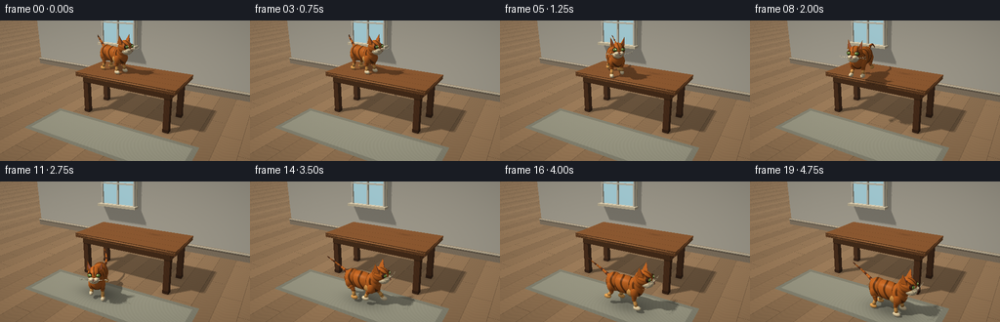
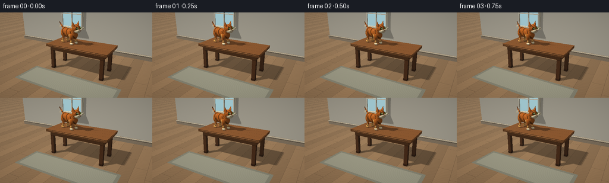

CODING AGENTS AS PIXEL WORLD MODELS
traex/GPT-6.1-Sol · dynamic_spatial_relationship_0012
点击播放 · 原生 RGB 像素
逐轮保存的候选
回放视频、检查图与代码变化。
每份候选均可单独播放。实际图片检查记录在下方工具轨迹中。
候选 01播放与检查图
点击播放 · 原生 RGB 像素


展开代码变化
--- 上一保存版本
+++ 本次保存版本
@@ -0,0 +1,422 @@
+"""Procedural, deterministic RGB animation. Pure numpy analytic ray rendering."""
+import os
+os.environ.setdefault('OPENBLAS_NUM_THREADS', '1')
+from pathlib import Path
+import json
+import math
+import numpy as np
+from PIL import Image
+import artifact_io
+
+ROOT = Path(__file__).resolve().parent
+SPEC = json.loads((ROOT/'task_spec.json').read_text())
+W,H=SPEC['width']*2,SPEC['height']*2
+DT=np.float32
+rng=np.random.default_rng(19)
+
+# Fixed perspective viewpoint, showing both tabletop and the floor in front.
+CAM=np.array([4.0,-7.5,4.2],DT)
+TARGET=np.array([0,-.55,1.15],DT)
+FWD=TARGET-CAM; FWD/=np.linalg.norm(FWD)
+RIGHT=np.cross(FWD,np.array([0,0,1],DT)); RIGHT/=np.linalg.norm(RIGHT)
+UP=np.cross(RIGHT,FWD)
+yy,xx=np.mgrid[0:H,0:W].astype(DT)
+DIR=FWD+(xx[...,None]-W*.5)/540*RIGHT-(yy[...,None]-H*(69/144))/540*UP
+DIR/=np.linalg.norm(DIR,axis=-1,keepdims=True)
+DIR=DIR.reshape(-1,3)
+SUN=np.array([-3.5,-4.0,7.0],DT); SUN/=np.linalg.norm(SUN)
+
+
+def vec(x): return np.array(x,DT)
+def normalize(v): return v/np.maximum(np.linalg.norm(v,axis=-1,keepdims=True),1e-8)
+def rot_z(t):
+ c,s=np.cos(t),np.sin(t)
+ return vec([[c,-s,0],[s,c,0],[0,0,1]])
+
+def basis_axis(axis):
+ z=normalize(vec(axis)); seed=vec([0,0,1]) if abs(z[2])<.9 else vec([0,1,0])
+ x=normalize(np.cross(seed,z)); y=np.cross(z,x)
+ return np.stack([x,y,z],axis=1)
+
+class Object:
+ def __init__(self,kind,c,r,color,mat='plain',R=None, vertices=None):
+ self.kind=kind; self.c=vec(c); self.r=vec(r); self.color=vec(color); self.mat=mat
+ self.R=np.eye(3,dtype=DT) if R is None else R.astype(DT)
+ self.vertices=vertices
+ def hit(self, origins, dirs, normals=False):
+ # row-vector world -> local transforms
+ o=(origins-self.c)@self.R
+ d=dirs@self.R
+ if self.kind=='ell':
+ os=o/self.r; ds=d/self.r
+ a=np.sum(ds*ds,axis=-1); b=np.sum(os*ds,axis=-1); c=np.sum(os*os,axis=-1)-1
+ disc=b*b-a*c
+ sq=np.sqrt(np.maximum(disc,0))
+ t=(-b-sq)/np.maximum(a,1e-12)
+ t=np.where(t>1e-4,t,(-b+sq)/np.maximum(a,1e-12))
+ t=np.where((disc>=0)&(t>1e-4),t,np.inf)
+ if not normals:return t
+ lp=o+d*np.where(np.isfinite(t),t,0)[...,None]
+ n=normalize((lp/(self.r*self.r))@self.R.T)
+ return t,n,lp
+ if self.kind=='box':
+ inv=1/np.where(abs(d)>1e-10,d,1e-10)
+ aa=(-self.r-o)*inv; bb=(self.r-o)*inv
+ lo=np.minimum(aa,bb); hi=np.maximum(aa,bb)
+ near=lo.max(axis=-1); far=hi.min(axis=-1)
+ t=np.where(near>1e-4,near,far)
+ t=np.where((far>=near)&(t>1e-4),t,np.inf)
+ if not normals:return t
+ lp=o+d*np.where(np.isfinite(t),t,0)[...,None]
+ ax=np.argmax(abs(lp)/self.r,axis=-1)
+ n=np.zeros_like(lp); inds=np.arange(len(lp)); n[inds,ax]=np.sign(lp[inds,ax])
+ return t,n@self.R.T,lp
+ if self.kind=='tri':
+ a,b,c=self.vertices
+ e1=b-a;e2=c-a
+ p=np.cross(dirs,e2);det=np.sum(p*e1,axis=-1)
+ inv=1/np.where(abs(det)>1e-9,det,1e-9)
+ v=origins-a;u=np.sum(v*p,axis=-1)*inv
+ q=np.cross(v,e1);w=np.sum(dirs*q,axis=-1)*inv
+ t=np.sum(q*e2,axis=-1)*inv
+ good=(abs(det)>1e-9)&(u>=0)&(w>=0)&(u+w<=1)&(t>1e-4)
+ t=np.where(good,t,np.inf)
+ if not normals:return t
+ n=normalize(np.cross(e1,e2)); n=np.broadcast_to(n,dirs.shape).copy()
+ n=np.where((np.sum(n*dirs,axis=-1)>0)[:,None],-n,n)
+ lp=np.stack([u,w,u*0],axis=-1)
+ return t,n,lp
+ if self.kind=='plane':
+ t=(self.c[2]-origins[...,2])/np.where(abs(dirs[...,2])>1e-7,dirs[...,2],1e-7)
+ t=np.where(t>1e-4,t,np.inf)
+ if not normals:return t
+ lp=origins+dirs*np.where(np.isfinite(t),t,0)[...,None]
+ n=np.zeros_like(dirs);n[:,2]=1
+ return t,n,lp
+
+
+def ell(objects,c,r,color,mat='plain',R=None):
+ objects.append(Object('ell',c,r,color,mat,R));return objects[-1]
+def box(objects,c,r,color,mat='plain',R=None): objects.append(Object('box',c,r,color,mat,R))
+def segment(objects,a,b,r,color,mat='plain'):
+ a,b=vec(a),vec(b); axis=b-a
+ ell(objects,(a+b)*.5,[r,r,np.linalg.norm(axis)*.5+r],color,mat,basis_axis(axis))
+def triangle(objects,v,color,mat='plain'):
+ objects.append(Object('tri',[0,0,0],[1,1,1],color,mat,vertices=vec(v)))
+
+
+def static_scene():
+ obs=[]
+ obs.append(Object('plane',[0,0,0],[1,1,1],[.61,.46,.31],'floor'))
+ # Warm, minimal room with a cream rear wall and discreet architectural detail.
+ box(obs,[0,3.4,2.9],[8,.08,2.9],[.80,.77,.69],'wall')
+ box(obs,[0,3.27,.16],[8,.10,.16],[.58,.50,.40],'wood')
+ box(obs,[0,3.15,.32],[8,.025,.024],[.88,.81,.67])
+ # A softly luminous window on the left, with a deep sill and muntins.
+ box(obs,[-2.5,3.23,2.70],[.95,.03,1.10],[.94,.88,.73])
+ box(obs,[-2.5,3.18,2.70],[.84,.03,.98],[.55,.72,.76],'window')
+ for x in [-3.36,-2.5,-1.64]:box(obs,[x,3.11,2.70],[.034,.055,1.03],[.95,.91,.80])
+ for z in [1.7,2.7,3.7]:box(obs,[-2.5,3.11,z],[.90,.055,.033],[.95,.91,.80])
+ box(obs,[-2.5,3.06,1.67],[1.02,.18,.055],[.92,.85,.69])
+ # Four-legged solid wood table. Top surface z = 1.5.
+ for x in [-1.51,1.51]:
+ for y in [-.61,.61]:
+ box(obs,[x,y,.69],[.093,.093,.69],[.29,.16,.082],'wood')
+ box(obs,[x,y,.055],[.10,.10,.055],[.20,.11,.061],'wood')
+ box(obs,[0,-.66,1.27],[1.60,.055,.13],[.39,.225,.112],'wood')
+ box(obs,[0,.66,1.27],[1.60,.055,.13],[.35,.19,.09],'wood')
+ box(obs,[-1.56,0,1.27],[.06,.67,.13],[.40,.225,.11],'wood')
+ box(obs,[1.56,0,1.27],[.06,.67,.13],[.40,.225,.11],'wood')
+ box(obs,[0,0,1.43],[1.80,.85,.070],[.52,.30,.145],'topwood')
+ # Slightly rounded tabletop silhouette, a narrow polished edging.
+ for y in [-.85,.85]:segment(obs,[-1.78,y,1.45],[1.78,y,1.45],.025,[.57,.34,.17],'wood')
+ for x in [-1.8,1.8]:segment(obs,[x,-.83,1.45],[x,.83,1.45],.025,[.55,.31,.15],'wood')
+ return obs
+
+GINGER=[.77,.36,.10]; LIGHT=[.91,.61,.27]; CREAM=[.94,.84,.64]; DARK=[.33,.15,.075]
+
+def cat_pose(frame):
+ # Establish tabletop location, approach near edge, spring down, run foreground.
+ if frame<=3:
+ x,y,z=-.68,-.08,1.5; yaw=-.30
+ phase=frame*.35; gait=0; pitch=0
+ elif frame<=7:
+ u=(frame-3)/4
+ x=-.68+.37*u; y=-.08-.53*u;z=1.5;yaw=-.30-1.10*u
+ phase=(frame-3)*1.35; gait=.13;pitch=-.04
+ elif frame<=11:
+ u=(frame-7)/4
+ x=-.31+.02*u;y=-.61-1.07*u;z=1.5+.26*np.sin(np.pi*u)-1.5*u*u
+ yaw=-1.40+.30*u
+ phase=frame*1.7;gait=.24;pitch=-.25*np.sin(np.pi*u)
+ elif frame<=17:
+ u=(frame-11)/6
+ x=-.29+1.30*u;y=-1.68-.16*np.sin(np.pi*u*.5);z=.035+.045*abs(np.sin((frame-11)*1.7))
+ yaw=-1.10+1.10*min(1,u*2.5)
+ phase=(frame-11)*1.8;gait=.24;pitch=.04*np.sin(phase)
+ else:
+ u=(frame-17)/2
+ x=1.01+.20*u;y=-1.84;z=0;yaw=-.07
+ phase=frame*1.5;gait=.06*(1-u);pitch=0
+ return vec([x,y,z]),yaw,phase,gait,pitch
+
+
+def add_cat(objects,frame):
+ pos,yaw,phase,gait,pitch=cat_pose(frame)
+ R=rot_z(yaw)
+ # A single rigid local coordinate frame makes every marking travel with the cat.
+ def p(x):return pos+R@vec(x)
+ def e(c,r,col=GINGER,mat='fur',rr=None):return ell(objects,p(c),r,col,mat,R if rr is None else R@rr)
+ def s(a,b,r,col=GINGER,mat='fur'):segment(objects,p(a),p(b),r,col,mat)
+ jump=8<=frame<=10
+ bodyz=.59 + (.015*np.sin(phase) if gait else 0)
+ # Torso, haunches, chest and pale belly: overlapping smooth forms.
+ bodyR=vec([[np.cos(pitch),0,-np.sin(pitch)],[0,1,0],[np.sin(pitch),0,np.cos(pitch)]])
+ e([-.08,0,bodyz],[.51,.225,.265],GINGER,'bodyfur',bodyR)
+ e([-.40,0,bodyz-.005],[.26,.235,.28],GINGER,'bodyfur')
+ e([.29,0,bodyz+.01],[.235,.225,.29],GINGER,'bodyfur')
+ e([.22,-.015,bodyz-.09],[.23,.21,.21],LIGHT,'fur')
+ # Four independently moving articulated legs.
+ for side in [1,-1]:
+ for front in [False,True]:
+ hx=.32 if front else -.43
+ hy=side*.16
+ offset=(0 if front else np.pi)+(0 if side<0 else np.pi*.92)
+ sw=np.sin(phase+offset)*gait
+ lift=max(0,np.cos(phase+offset))*gait*.48
+ if jump:
+ u=(frame-7)/4
+ sw=(.15 if front else -.18)*np.sin(np.pi*u)
+ lift=.11 if frame<10 else .025
+ hip=[hx,hy,bodyz-.075]
+ foot=[hx+sw,hy*1.13,.066+lift]
+ knee=[hx+sw*.43+(-.05 if front else .065),hy,.28+lift*.45]
+ e(hip,[.116,.095,.17],GINGER,'fur')
+ s(hip,knee,.071,GINGER,'legfur');s(knee,foot,.052,LIGHT,'legfur')
+ e(foot,[.113,.066,.064],CREAM if front else LIGHT,'fur')
+ # Little toes on the nearest pair.
+ if side==-1:
+ for ty in [-.021,.016]:
+ s([foot[0]+.045,foot[1]+ty,foot[2]+.045],[foot[0]+.084,foot[1]+ty,foot[2]+.030],.004,[.48,.32,.17],'plain')
+ # Curved tapering tail with dark tabby rings, gently counter-balancing motion.
+ wag=.06*np.sin(frame*.42)
+ pts=[]
+ for j in range(13):
+ u=j/12
+ if frame<5:
+ tx=-.49-.61*np.sin(u*np.pi*.63); tz=bodyz+.06+.60*u-.15*u*u
+ ty=.025+.16*np.sin(u*2.6)+wag*u
+ elif jump:
+ tx=-.5-.88*u;tz=bodyz+.05+.18*np.sin(u*np.pi);ty=.05+wag*u
+ else:
+ tx=-.5-.85*u;tz=bodyz+.05+.42*u*u;ty=.035+.14*np.sin(u*3)+wag*u
+ pts.append([tx,ty,tz])
+ for j in range(12):
+ rad=.055*(1-j/15)
+ col=DARK if j in [3,6,9,11] else GINGER
+ s(pts[j],pts[j+1],rad,col,'fur')
+ # Head and neck: feline muzzle, high cheeks, triangular upright ears.
+ hz=bodyz+.33
+ if jump:hz-=.08
+ hc=vec([.51,0,hz])
+ e([.40,0,bodyz+.21],[.185,.19,.235],GINGER,'fur')
+ e(hc,[.245,.214,.221],GINGER,'headfur')
+ e(hc+[.11,-.02,-.11],[.177,.161,.12],CREAM,'fur')
+ for side in [-1,1]:
+ # Pyramidal ears with curved base and inset rosy interior.
+ by=side*.148
+ earverts=[hc+vec([-.13,by-.070,.115]),hc+vec([.074,by-.066,.135]),hc+vec([.015,by+.064,.13]),hc+vec([-.032,by+side*.064,.385])]
+ for ids in [(0,1,3),(1,2,3),(2,0,3),(0,2,1)]:
+ triangle(objects,[p(earverts[k]) for k in ids],GINGER,'fur')
+ # Inner ear faces towards the nose (+x); kept slightly in front of outer face.
+ vv=[hc+vec([.041,by-.041,.160]),hc+vec([.031,by+.043,.163]),hc+vec([-.006,by+side*.047,.326])]
+ triangle(objects,[p(v) for v in vv],[.77,.40,.32],'ear')
+ # Eyeballs turned outwards for visible, matched eyes.
+ er=rot_z(side*.40)
+ ec=hc+vec([.185,side*.117,.051])
+ e(ec,[.058,.077,.068],[.20,.10,.055],'plain',er)
+ e(ec+vec([.018,0,.002]),[.050,.064,.053],[.48,.65,.24],'eye',er)
+ e(ec+vec([.058,side*.006,.005]),[.009,.011,.044],[.035,.044,.022],'plain',er)
+ e(ec+vec([.064,side*-.012,.025]),[.009,.012,.013],[1,.99,.85],'glint')
+ # White muzzle pads and the nose bridge.
+ e(hc+vec([.202,side*.064,-.059]),[.108,.080,.065],CREAM,'fur')
+ # Three whiskers per side, clean enough to survive supersampling.
+ for j in range(3):
+ a=hc+vec([.272,side*.061,-.048-j*.020])
+ b=hc+vec([.29-j*.024,side*(.235+.016*j),-.043-j*.012])
+ c=hc+vec([.27-j*.041,side*(.38+.012*j),-.007-j*.046])
+ s(a,b,.003,[.92,.86,.69],'plain');s(b,c,.0026,[.91,.84,.68],'plain')
+ for k in range(3):
+ e(hc+vec([.283,side*(.038+k*.020),-.059-k*.007]),[.004,.004,.004],DARK,'plain')
+ nose=hc+vec([.303,0,-.037])
+ triangle(objects,[p(nose+vec([.008,-.044,.018])),p(nose+vec([.008,.044,.018])),p(nose+vec([.018,0,-.025]))],[.57,.25,.22],'nose')
+ s(nose+vec([.017,0,-.023]),nose+vec([.014,0,-.053]),.004,DARK,'plain')
+ for side in [-1,1]:
+ s(nose+vec([.014,0,-.053]),nose+vec([.012,side*.037,-.062]),.004,DARK,'plain')
+ return pos
+
+
+def material(ob,lp,wp):
+ n=len(lp); col=np.broadcast_to(ob.color,(n,3)).copy()
+ m=ob.mat
+ if m in ['wood','topwood','floor']:
+ if m=='floor':
+ x,y=wp[:,0],wp[:,1]
+ plank=np.floor((x+10)/.62)
+ phase=plank*1.723
+ grain=np.sin(y*43+np.sin(x*10)*2+phase)*.012+np.sin(y*113+x*9)*.006
+ joint=(np.mod(x+10,.62)<.013)|(np.mod(y+np.mod(plank,3)*.87,2.6)<.013)
+ shade=.93+np.sin(plank*4.31)*.055+grain
+ col*=shade[:,None];col[joint]*=.75
+ # Very subtle woven neutral rug in the foreground, not covering contact.
+ rug=(wp[:,0]>-2.55)&(wp[:,0]<2.65)&(wp[:,1]>-2.64)&(wp[:,1]<-.98)
+ rc=np.tile(vec([.59,.58,.49]),(n,1))
+ weave=(np.sin(wp[:,0]*180)*np.sin(wp[:,1]*190))*.017
+ rc+=weave[:,None]
+ border=(wp[:,0]<-2.39)|(wp[:,0]>2.49)|(wp[:,1]<-2.50)|(wp[:,1]>-1.12)
+ rc[border]*=.84
+ col[rug]=rc[rug]
+ else:
+ x,y,z=lp.T
+ grain=.035*np.sin(y*84+3*np.sin(x*2)+.5*np.sin(x*8))+.013*np.sin(y*230+x*5)
+ if m=='wood':grain=.027*np.sin(z*25+x*58+2*np.sin(z*5))+.015*np.sin(z*130+x*19)
+ col*= (1+grain)[:,None]
+ if m=='topwood':
+ seams=np.mod(y+.85,.425)<.008
+ col[seams]*=.72
+ knot=np.exp(-((x-.65)**2/.05+(y-.32)**2/.007))
+ col*=(1-.15*knot[:,None])
+ elif m in ['fur','bodyfur','legfur','headfur']:
+ # Fine deterministic fur roughness plus coherent tabby markings.
+ noise=np.sin(lp[:,0]*313+np.sin(lp[:,1]*181)+lp[:,2]*213)*np.sin(lp[:,1]*397-lp[:,2]*211)
+ col*= (1+.030*noise)[:,None]
+ if m=='bodyfur':
+ bands=np.sin(lp[:,0]*26+2.1*np.sin(lp[:,2]*8)+.7*np.sin(lp[:,1]*13))
+ mask=np.clip((bands-.50)*3,0,1)*.52
+ col*=1-mask[:,None]
+ # warm dorsal saddle
+ col*= (1-.10*np.clip(lp[:,2]*3,0,1))[:,None]
+ elif m=='legfur':
+ bands=np.sin(lp[:,2]*49+lp[:,0]*4)
+ col*= (1-.33*np.clip((bands-.55)*3,0,1))[:,None]
+ elif m=='headfur':
+ x,y,z=lp.T
+ forehead=(z>.062)&(x>.015)
+ bands=np.sin(y*52+z*13)
+ shade=np.clip((bands-.42)*3,0,1)*forehead*.47
+ side=np.sin(z*53+x*12)
+ shade+=np.clip((side-.65)*3,0,1)*(abs(y)>.11)*.28
+ col*=1-np.minimum(shade,.65)[:,None]
+ elif m=='wall':
+ col*= (1+.009*np.sin(wp[:,0]*123)*np.sin(wp[:,2]*127))[:,None]
+ elif m=='window':
+ col*=np.clip(.85+wp[:,2]*.055,.8,1.12)[:,None]
+ return np.clip(col,0,1)
+
+
+def render(frame):
+ obs=static_scene();catpos=add_cat(obs,frame)
+ N=len(DIR); orig=np.broadcast_to(CAM,DIR.shape)
+ depth=np.full(N,np.inf,DT); oid=np.full(N,-1,np.int16)
+ # Broad phase projected sphere bounds speeds up tiny facial and tail details.
+ indices=[]
+ for i,ob in enumerate(obs):
+ if ob.kind=='plane' or (ob.kind=='box' and np.max(ob.r)>3):
+ idx=np.arange(N)
+ else:
+ if ob.kind=='tri':
+ cent=np.mean(ob.vertices,axis=0);rad=np.max(np.linalg.norm(ob.vertices-cent,axis=1))
+ else:cent=ob.c;rad=np.linalg.norm(ob.r)
+ rel=cent-CAM; distance=rel@FWD
+ if distance<=rad:idx=np.arange(N)
+ else:
+ u=W*.5+540*(rel@RIGHT)/distance
+ v=H*(69/144)-540*(rel@UP)/distance
+ rr=540*rad/(distance-rad)+3
+ x0=max(0,int(u-rr));x1=min(W,int(u+rr)+1);y0=max(0,int(v-rr));y1=min(H,int(v+rr)+1)
+ if x1<=x0 or y1<=y0:idx=np.zeros(0,np.int64)
+ else:idx=(np.arange(y0,y1)[:,None]*W+np.arange(x0,x1)).ravel()
+ indices.append(idx)
+ if len(idx)==0:continue
+ t=ob.hit(orig[idx],DIR[idx]);yes=t<depth[idx]
+ ids=idx[yes];depth[ids]=t[yes];oid[ids]=i
+ finite=np.isfinite(depth)
+ wp=orig+DIR*np.where(finite,depth,0)[:,None]
+ normals=np.zeros_like(DIR); albedo=np.ones_like(DIR);special=np.zeros(N,np.int8)
+ for i,ob in enumerate(obs):
+ ids=np.flatnonzero(oid==i)
+ if not len(ids):continue
+ _,n,lp=ob.hit(orig[ids],DIR[ids],True)
+ normals[ids]=n;albedo[ids]=material(ob,lp,wp[ids])
+ if ob.mat=='eye':special[ids]=1
+ elif ob.mat=='glint':special[ids]=2
+ elif ob.mat=='window':special[ids]=3
+ # Real directional cast shadows, with multiple light samples on floor and tabletop.
+ # Ambient hemisphere lighting ensures round, softly modelled cat features.
+ shade=np.ones(N,DT)
+ lightdirs=[normalize(SUN+vec([-.016,.012,0])),normalize(SUN+vec([.016,-.012,0]))]
+ for ld in lightdirs:
+ block=np.zeros(N,bool)
+ # Only finite pixels facing the key light need shadow intersection tests.
+ active=np.flatnonzero(finite&(np.sum(normals*ld,axis=-1)>.02))
+ po=wp[active]+normals[active]*.0035
+ dd=np.broadcast_to(ld,po.shape)
+ for j,ob in enumerate(obs):
+ if ob.kind=='plane' or ob.mat in ['window','glint']:continue
+ # Sphere bound for rays from surfaces to the directional light.
+ if ob.kind=='tri':
+ c=np.mean(ob.vertices,axis=0);rad=np.max(np.linalg.norm(ob.vertices-c,axis=1))
+ else:c=ob.c;rad=np.linalg.norm(ob.r)
+ v=c-po;f=v@ld; dist=np.sum(v*v,axis=-1)-f*f
+ possible=(dist<(rad+.007)**2)&(f>-rad)&(~block[active])
+ small=np.flatnonzero(possible)
+ if len(small):
+ t=ob.hit(po[small],dd[small]);bh=np.isfinite(t)
+ block[active[small[bh]]]=True
+ shade-=block.astype(DT)*.39
+ ndl=np.clip(normals@SUN,0,1)
+ ambient=.38+.08*np.clip(normals[:,2],-1,1)+.04*np.clip(-normals[:,1],-1,1)
+ lighting=ambient+.60*ndl*shade
+ # Ground contact attenuation / soft penumbrae anchored to objects.
+ floor=oid==0
+ floorids=np.flatnonzero(floor)
+ if len(floorids):
+ pts=wp[floorids]
+ ao=np.zeros(len(pts),DT)
+ for x in [-1.51,1.51]:
+ for y in [-.61,.61]:ao+=.23*np.exp(-((pts[:,0]-x)**2+(pts[:,1]-y)**2)/.028)
+ if frame>=10:
+ h=max(catpos[2],0)
+ ao+=.33*np.exp(-((pts[:,0]-catpos[0])**2/.40+(pts[:,1]-catpos[1])**2/.14))/(1+h*3)
+ lighting[floorids]*=1-np.minimum(ao,.45)
+ rgb=albedo*lighting[:,None]
+ # A soft, warm large-light specular response for the eyes and waxed tabletop.
+ half=normalize(SUN-DIR)
+ spec=np.clip(np.sum(normals*half,axis=-1),0,1)
+ rgb+=((spec**55)*.09*shade)[:,None]
+ eyes=special==1;rgb[eyes]+=((spec[eyes]**35)*.28)[:,None]
+ rgb[special==2]=vec([1,.98,.83])
+ rgb[special==3]=albedo[special==3]*1.12
+ # Gentle atmospheric depth and corner vignette; highlights not clipped harshly.
+ haze=np.clip((depth-7)*.009,0,.12);haze[~finite]=0
+ rgb=rgb*(1-haze[:,None])+vec([.75,.72,.64])*haze[:,None]
+ # Slight display lift, keeps warm colors saturated without crushed dark markings.
+ rgb=np.clip(rgb,0,1)**.86
+ vignette=1-.075*((xx-W/2)**2/(W/2)**2+(yy-H/2)**2/(H/2)**2)
+ rgb=rgb.reshape(H,W,3)*vignette[...,None]
+ im=Image.fromarray((np.clip(rgb,0,1)*255+.5).astype(np.uint8),'RGB')
+ return np.array(im.resize((SPEC['width'],SPEC['height']),Image.Resampling.LANCZOS))
+
+
+def main():
+ frames=[]
+ for i in range(SPEC['frames']):
+ frames.append(render(i));print(f'Rendered {i+1}/{SPEC["frames"]}',flush=True)
+ frames=np.stack(frames).astype(np.uint8)
+ artifact_io.save(frames,ROOT)
+ # An additional conventional RGB video for convenient playback.
+ import imageio.v2 as imageio
+ imageio.mimwrite(ROOT/'video.mp4',frames,fps=SPEC['fps'],codec='libx264',quality=9,pixelformat='yuv420p',macro_block_size=1)
+ print('Saved pixels.npz, frame PNGs, HTML player, and video.mp4.',flush=True)
+
+if __name__=='__main__':main()
可观测工具轨迹
实际执行的命令与返回图片。
命令 1exit 0
/bin/bash -lc 'ls -la && cat prompt.txt && cat GENERATION_RULES.md && cat task_spec.json'
命令 2exit 0
/bin/bash -lc "cat artifact_io.py && python - <<'PY' import importlib.util for m in ['numpy','PIL','imageio','imageio_ffmpeg']: print(m, bool(importlib.util.find_spec(m))) PY"
命令 3exit 0
/bin/bash -lc "python - <<'PY' import numpy as np cam=np.array([4.4,-7.2,4.2]); target=np.array([0,-.4,1.35]); fw=target-cam; fw/=np.linalg.norm(fw); right=np.cross(fw,[0,0,1]);right/=np.linalg.norm(right); up=np.cross(right,fw) for p in [[-1.8,-1,1.75],[1.8,-1,1.75],[1.8,1,1.75],[-1.8,1,1.75],[-.55,-.1,2.8],[1.2,-2.0,.9],[1.8,-2.0,0]]: q=np.array(p)-cam;z=q@fw print(p,np.round([128+330*q@right/z,72-330*q@up/z],1)) PY"
命令 4exit 0
/bin/bash -lc "python - <<'PY' import numpy as np cam=np.array([4.0,-7.5,4.2]); target=np.array([0,-.55,1.15]); fw=target-cam; fw/=np.linalg.norm(fw); r=np.cross(fw,[0,0,1]);r/=np.linalg.norm(r);u=np.cross(r,fw) for p in [[-1.8,-.85,1.5],[1.8,-.85,1.5],[1.8,.85,1.5],[-1.8,.85,1.5],[-.7,-.1,2.5],[-.3,-1.85,.5],[1.5,-1.85,0],[2.4,-1.85,.5]]: q=np.array(p)-cam;z=q@fw print(p,np.round([128+270*q@r/z,69-270*q@u/z],1)) PY"
命令 5exit 0
/bin/bash -lc "cat > generate.py <<'PY'
\"\"\"Procedural, deterministic RGB animation. Pure numpy analytic ray rendering.\"\"\"
import os
os.environ.setdefault('OPENBLAS_NUM_THREADS', '1')
from pathlib import Path
import json
import math
import numpy as np
from PIL import Image
import artifact_io
ROOT = Path(__file__).resolve().parent
SPEC = json.loads((ROOT/'task_spec.json').read_text())
W,H=SPEC['width']*2,SPEC['height']*2
DT=np.float32
rng=np.random.default_rng(19)
# Fixed perspective viewpoint, showing both tabletop and the floor in front.
CAM=np.array([4.0,-7.5,4.2],DT)
TARGET=np.array([0,-.55,1.15],DT)
FWD=TARGET-CAM; FWD/=np.linalg.norm(FWD)
RIGHT=np.cross(FWD,np.array([0,0,1],DT)); RIGHT/=np.linalg.norm(RIGHT)
UP=np.cross(RIGHT,FWD)
yy,xx=np.mgrid[0:H,0:W].astype(DT)
DIR=FWD+(xx[...,None]-W*.5)/540*RIGHT-(yy[...,None]-H*(69/144))/540*UP
DIR/=np.linalg.norm(DIR,axis=-1,keepdims=True)
DIR=DIR.reshape(-1,3)
SUN=np.array([-3.5,-4.0,7.0],DT); SUN/=np.linalg.norm(SUN)
def vec(x): return np.array(x,DT)
def normalize(v): return v/np.maximum(np.linalg.norm(v,axis=-1,keepdims=True),1e-8)
def rot_z(t):
c,s=np.cos(t),np.sin(t)
return vec([[c,-s,0],[s,c,0],[0,0,1]])
def basis_axis(axis):
z=normalize(vec(axis)); seed=vec([0,0,1]) if abs(z[2])<.9 else vec([0,1,0])
x=normalize(np.cross(seed,z)); y=np.cross(z,x)
return np.stack([x,y,z],axis=1)
class Object:
def __init__(self,kind,c,r,color,mat='plain',R=None, vertices=None):
self.kind=kind; self.c=vec(c); self.r=vec(r); self.color=vec(color); self.mat=mat
self.R=np.eye(3,dtype=DT) if R is None else R.astype(DT)
self.vertices=vertices
def hit(self, origins, dirs, normals=False):
# row-vector world -> local transforms
o=(origins-self.c)@self.R
d=dirs@self.R
if self.kind=='ell':
os=o/self.r; ds=d/self.r
a=np.sum(ds*ds,axis=-1); b=np.sum(os*ds,axis=-1); c=np.sum(os*os,axis=-1)-1
disc=b*b-a*c
sq=np.sqrt(np.maximum(disc,0))
t=(-b-sq)/np.maximum(a,1e-12)
t=np.where(t>1e-4,t,(-b+sq)/np.maximum(a,1e-12))
t=np.where((disc>=0)&(t>1e-4),t,np.inf)
if not normals:return t
lp=o+d*np.where(np.isfinite(t),t,0)[...,None]
n=normalize((lp/(self.r*self.r))@self.R.T)
return t,n,lp
if self.kind=='box':
inv=1/np.where(abs(d)>1e-10,d,1e-10)
aa=(-self.r-o)*inv; bb=(self.r-o)*inv
lo=np.minimum(aa,bb); hi=np.maximum(aa,bb)
near=lo.max(axis=-1); far=hi.min(axis=-1)
t=np.where(near>1e-4,near,far)
t=np.where((far>=near)&(t>1e-4),t,np.inf)
if not normals:return t
lp=o+d*np.where(np.isfinite(t),t,0)[...,None]
ax=np.argmax(abs(lp)/self.r,axis=-1)
n=np.zeros_like(lp); inds=np.arange(len(lp)); n[inds,ax]=np.sign(lp[inds,ax])
return t,n@self.R.T,lp
if self.kind=='tri':
a,b,c=self.vertices
e1=b-a;e2=c-a
p=np.cross(dirs,e2);det=np.sum(p*e1,axis=-1)
inv=1/np.where(abs(det)>1e-9,det,1e-9)
v=origins-a;u=np.sum(v*p,axis=-1)*inv
q=np.cross(v,e1);w=np.sum(dirs*q,axis=-1)*inv
t=np.sum(q*e2,axis=-1)*inv
good=(abs(det)>1e-9)&(u>=0)&(w>=0)&(u+w<=1)&(t>1e-4)
t=np.where(good,t,np.inf)
if not normals:return t
n=normalize(np.cross(e1,e2)); n=np.broadcast_to(n,dirs.shape).copy()
n=np.where((np.sum(n*dirs,axis=-1)>0)[:,None],-n,n)
lp=np.stack([u,w,u*0],axis=-1)
return t,n,lp
if self.kind=='plane':
t=(self.c[2]-origins[...,2])/np.where(abs(dirs[...,2])>1e-7,dirs[...,2],1e-7)
t=np.where(t>1e-4,t,np.inf)
if not normals:return t
lp=origins+dirs*np.where(np.isfinite(t),t,0)[...,None]
n=np.zeros_like(dirs);n[:,2]=1
return t,n,lp
def ell(objects,c,r,color,mat='plain',R=None):
objects.append(Object('ell',c,r,color,mat,R));return objects[-1]
def box(objects,c,r,color,mat='plain',R=None): objects.append(Object('box',c,r,color,mat,R))
def segment(objects,a,b,r,color,mat='plain'):
a,b=vec(a),vec(b); axis=b-a
ell(objects,(a+b)*.5,[r,r,np.linalg.norm(axis)*.5+r],color,mat,basis_axis(axis))
def triangle(objects,v,color,mat='plain'):
objects.append(Object('tri',[0,0,0],[1,1,1],color,mat,vertices=vec(v)))
def static_scene():
obs=[]
obs.append(Object('plane',[0,0,0],[1,1,1],[.61,.46,.31],'floor'))
# Warm, minimal room with a cream rear wall and discreet architectural detail.
box(obs,[0,3.4,2.9],[8,.08,2.9],[.80,.77,.69],'wall')
box(obs,[0,3.27,.16],[8,.10,.16],[.58,.50,.40],'wood')
box(obs,[0,3.15,.32],[8,.025,.024],[.88,.81,.67])
# A softly luminous window on the left, with a deep sill and muntins.
box(obs,[-2.5,3.23,2.70],[.95,.03,1.10],[.94,.88,.73])
box(obs,[-2.5,3.18,2.70],[.84,.03,.98],[.55,.72,.76],'window')
for x in [-3.36,-2.5,-1.64]:box(obs,[x,3.11,2.70],[.034,.055,1.03],[.95,.91,.80])
for z in [1.7,2.7,3.7]:box(obs,[-2.5,3.11,z],[.90,.055,.033],[.95,.91,.80])
box(obs,[-2.5,3.06,1.67],[1.02,.18,.055],[.92,.85,.69])
# Four-legged solid wood table. Top surface z = 1.5.
for x in [-1.51,1.51]:
for y in [-.61,.61]:
box(obs,[x,y,.69],[.093,.093,.69],[.29,.16,.082],'wood')
box(obs,[x,y,.055],[.10,.10,.055],[.20,.11,.061],'wood')
box(obs,[0,-.66,1.27],[1.60,.055,.13],[.39,.225,.112],'wood')
box(obs,[0,.66,1.27],[1.60,.055,.13],[.35,.19,.09],'wood')
box(obs,[-1.56,0,1.27],[.06,.67,.13],[.40,.225,.11],'wood')
box(obs,[1.56,0,1.27],[.06,.67,.13],[.40,.225,.11],'wood')
box(obs,[0,0,1.43],[1.80,.85,.070],[.52,.30,.145],'topwood')
# Slightly rounded tabletop silhouette, a narrow polished edging.
for y in [-.85,.85]:segment(obs,[-1.78,y,1.45],[1.78,y,1.45],.025,[.57,.34,.17],'wood')
for x in [-1.8,1.8]:segment(obs,[x,-.83,1.45],[x,.83,1.45],.025,[.55,.31,.15],'wood')
return obs
GINGER=[.77,.36,.10]; LIGHT=[.91,.61,.27]; CREAM=[.94,.84,.64]; DARK=[.33,.15,.075]
def cat_pose(frame):
# Establish tabletop location, approach near edge, spring down, run foreground.
if frame<=3:
x,y,z=-.68,-.08,1.5; yaw=-.30
phase=frame*.35; gait=0; pitch=0
elif frame<=7:
u=(frame-3)/4
x=-.68+.37*u; y=-.08-.53*u;z=1.5;yaw=-.30-1.10*u
phase=(frame-3)*1.35; gait=.13;pitch=-.04
elif frame<=11:
u=(frame-7)/4
x=-.31+.02*u;y=-.61-1.07*u;z=1.5+.26*np.sin(np.pi*u)-1.5*u*u
yaw=-1.40+.30*u
phase=frame*1.7;gait=.24;pitch=-.25*np.sin(np.pi*u)
elif frame<=17:
u=(frame-11)/6
x=-.29+1.30*u;y=-1.68-.16*np.sin(np.pi*u*.5);z=.035+.045*abs(np.sin((frame-11)*1.7))
yaw=-1.10+1.10*min(1,u*2.5)
phase=(frame-11)*1.8;gait=.24;pitch=.04*np.sin(phase)
else:
u=(frame-17)/2
x=1.01+.20*u;y=-1.84;z=0;yaw=-.07
phase=frame*1.5;gait=.06*(1-u);pitch=0
return vec([x,y,z]),yaw,phase,gait,pitch
def add_cat(objects,frame):
pos,yaw,phase,gait,pitch=cat_pose(frame)
R=rot_z(yaw)
# A single rigid local coordinate frame makes every marking travel with the cat.
def p(x):return pos+R@vec(x)
def e(c,r,col=GINGER,mat='fur',rr=None):return ell(objects,p(c),r,col,mat,R if rr is None else R@rr)
def s(a,b,r,col=GINGER,mat='fur'):segment(objects,p(a),p(b),r,col,mat)
jump=8<=frame<=10
bodyz=.59 + (.015*np.sin(phase) if gait else 0)
# Torso, haunches, chest and pale belly: overlapping smooth forms.
bodyR=vec([[np.cos(pitch),0,-np.sin(pitch)],[0,1,0],[np.sin(pitch),0,np.cos(pitch)]])
e([-.08,0,bodyz],[.51,.225,.265],GINGER,'bodyfur',bodyR)
e([-.40,0,bodyz-.005],[.26,.235,.28],GINGER,'bodyfur')
e([.29,0,bodyz+.01],[.235,.225,.29],GINGER,'bodyfur')
e([.22,-.015,bodyz-.09],[.23,.21,.21],LIGHT,'fur')
# Four independently moving articulated legs.
for side in [1,-1]:
for front in [False,True]:
hx=.32 if front else -.43
hy=side*.16
offset=(0 if front else np.pi)+(0 if side<0 else np.pi*.92)
sw=np.sin(phase+offset)*gait
lift=max(0,np.cos(phase+offset))*gait*.48
if jump:
u=(frame-7)/4
sw=(.15 if front else -.18)*np.sin(np.pi*u)
lift=.11 if frame<10 else .025
hip=[hx,hy,bodyz-.075]
foot=[hx+sw,hy*1.13,.066+lift]
knee=[hx+sw*.43+(-.05 if front else .065),hy,.28+lift*.45]
e(hip,[.116,.095,.17],GINGER,'fur')
s(hip,knee,.071,GINGER,'legfur');s(knee,foot,.052,LIGHT,'legfur')
e(foot,[.113,.066,.064],CREAM if front else LIGHT,'fur')
# Little toes on the nearest pair.
if side==-1:
for ty in [-.021,.016]:
s([foot[0]+.045,foot[1]+ty,foot[2]+.045],[foot[0]+.084,foot[1]+ty,foot[2]+.030],.004,[.48,.32,.17],'plain')
# Curved tapering tail with dark tabby rings, gently counter-balancing motion.
wag=.06*np.sin(frame*.42)
pts=[]
for j in range(13):
u=j/12
if frame<5:
tx=-.49-.61*np.sin(u*np.pi*.63); tz=bodyz+.06+.60*u-.15*u*u
ty=.025+.16*np.sin(u*2.6)+wag*u
elif jump:
tx=-.5-.88*u;tz=bodyz+.05+.18*np.sin(u*np.pi);ty=.05+wag*u
else:
tx=-.5-.85*u;tz=bodyz+.05+.42*u*u;ty=.035+.14*np.sin(u*3)+wag*u
pts.append([tx,ty,tz])
for j in range(12):
rad=.055*(1-j/15)
col=DARK if j in [3,6,9,11] else GINGER
s(pts[j],pts[j+1],rad,col,'fur')
# Head and neck: feline muzzle, high cheeks, triangular upright ears.
hz=bodyz+.33
if jump:hz-=.08
hc=vec([.51,0,hz])
e([.40,0,bodyz+.21],[.185,.19,.235],GINGER,'fur')
e(hc,[.245,.214,.221],GINGER,'headfur')
e(hc+[.11,-.02,-.11],[.177,.161,.12],CREAM,'fur')
for side in [-1,1]:
# Pyramidal ears with curved base and inset rosy interior.
by=side*.148
earverts=[hc+vec([-.13,by-.070,.115]),hc+vec([.074,by-.066,.135]),hc+vec([.015,by+.064,.13]),hc+vec([-.032,by+side*.064,.385])]
for ids in [(0,1,3),(1,2,3),(2,0,3),(0,2,1)]:
triangle(objects,[p(earverts[k]) for k in ids],GINGER,'fur')
# Inner ear faces towards the nose (+x); kept slightly in front of outer face.
vv=[hc+vec([.041,by-.041,.160]),hc+vec([.031,by+.043,.163]),hc+vec([-.006,by+side*.047,.326])]
triangle(objects,[p(v) for v in vv],[.77,.40,.32],'ear')
# Eyeballs turned outwards for visible, matched eyes.
er=rot_z(side*.40)
ec=hc+vec([.185,side*.117,.051])
e(ec,[.058,.077,.068],[.20,.10,.055],'plain',er)
e(ec+vec([.018,0,.002]),[.050,.064,.053],[.48,.65,.24],'eye',er)
e(ec+vec([.058,side*.006,.005]),[.009,.011,.044],[.035,.044,.022],'plain',er)
e(ec+vec([.064,side*-.012,.025]),[.009,.012,.013],[1,.99,.85],'glint')
# White muzzle pads and the nose bridge.
e(hc+vec([.202,side*.064,-.059]),[.108,.080,.065],CREAM,'fur')
# Three whiskers per side, clean enough to survive supersampling.
for j in range(3):
a=hc+vec([.272,side*.061,-.048-j*.020])
b=hc+vec([.29-j*.024,side*(.235+.016*j),-.043-j*.012])
c=hc+vec([.27-j*.041,side*(.38+.012*j),-.007-j*.046])
s(a,b,.003,[.92,.86,.69],'plain');s(b,c,.0026,[.91,.84,.68],'plain')
for k in range(3):
e(hc+vec([.283,side*(.038+k*.020),-.059-k*.007]),[.004,.004,.004],DARK,'plain')
nose=hc+vec([.303,0,-.037])
triangle(objects,[p(nose+vec([.008,-.044,.018])),p(nose+vec([.008,.044,.018])),p(nose+vec([.018,0,-.025]))],[.57,.25,.22],'nose')
s(nose+vec([.017,0,-.023]),nose+vec([.014,0,-.053]),.004,DARK,'plain')
for side in [-1,1]:
s(nose+vec([.014,0,-.053]),nose+vec([.012,side*.037,-.062]),.004,DARK,'plain')
return pos
def material(ob,lp,wp):
n=len(lp); col=np.broadcast_to(ob.color,(n,3)).copy()
m=ob.mat
if m in ['wood','topwood','floor']:
if m=='floor':
x,y=wp[:,0],wp[:,1]
plank=np.floor((x+10)/.62)
phase=plank*1.723
grain=np.sin(y*43+np.sin(x*10)*2+phase)*.012+np.sin(y*113+x*9)*.006
joint=(np.mod(x+10,.62)<.013)|(np.mod(y+np.mod(plank,3)*.87,2.6)<.013)
shade=.93+np.sin(plank*4.31)*.055+grain
col*=shade[:,None];col[joint]*=.75
# Very subtle woven neutral rug in the foreground, not covering contact.
rug=(wp[:,0]>-2.55)&(wp[:,0]<2.65)&(wp[:,1]>-2.64)&(wp[:,1]<-.98)
rc=np.tile(vec([.59,.58,.49]),(n,1))
weave=(np.sin(wp[:,0]*180)*np.sin(wp[:,1]*190))*.017
rc+=weave[:,None]
border=(wp[:,0]<-2.39)|(wp[:,0]>2.49)|(wp[:,1]<-2.50)|(wp[:,1]>-1.12)
rc[border]*=.84
col[rug]=rc[rug]
else:
x,y,z=lp.T
grain=.035*np.sin(y*84+3*np.sin(x*2)+.5*np.sin(x*8))+.013*np.sin(y*230+x*5)
if m=='wood':grain=.027*np.sin(z*25+x*58+2*np.sin(z*5))+.015*np.sin(z*130+x*19)
col*= (1+grain)[:,None]
if m=='topwood':
seams=np.mod(y+.85,.425)<.008
col[seams]*=.72
knot=np.exp(-((x-.65)**2/.05+(y-.32)**2/.007))
col*=(1-.15*knot[:,None])
elif m in ['fur','bodyfur','legfur','headfur']:
# Fine deterministic fur roughness plus coherent tabby markings.
noise=np.sin(lp[:,0]*313+np.sin(lp[:,1]*181)+lp[:,2]*213)*np.sin(lp[:,1]*397-lp[:,2]*211)
col*= (1+.030*noise)[:,None]
if m=='bodyfur':
bands=np.sin(lp[:,0]*26+2.1*np.sin(lp[:,2]*8)+.7*np.sin(lp[:,1]*13))
mask=np.clip((bands-.50)*3,0,1)*.52
col*=1-mask[:,None]
# warm dorsal saddle
col*= (1-.10*np.clip(lp[:,2]*3,0,1))[:,None]
elif m=='legfur':
bands=np.sin(lp[:,2]*49+lp[:,0]*4)
col*= (1-.33*np.clip((bands-.55)*3,0,1))[:,None]
elif m=='headfur':
x,y,z=lp.T
forehead=(z>.062)&(x>.015)
bands=np.sin(y*52+z*13)
shade=np.clip((bands-.42)*3,0,1)*forehead*.47
side=np.sin(z*53+x*12)
shade+=np.clip((side-.65)*3,0,1)*(abs(y)>.11)*.28
col*=1-np.minimum(shade,.65)[:,None]
elif m=='wall':
col*= (1+.009*np.sin(wp[:,0]*123)*np.sin(wp[:,2]*127))[:,None]
elif m=='window':
col*=np.clip(.85+wp[:,2]*.055,.8,1.12)[:,None]
return np.clip(col,0,1)
def render(frame):
obs=static_scene();catpos=add_cat(obs,frame)
N=len(DIR); orig=np.broadcast_to(CAM,DIR.shape)
depth=np.full(N,np.inf,DT); oid=np.full(N,-1,np.int16)
# Broad phase projected sphere bounds speeds up tiny facial and tail details.
indices=[]
for i,ob in enumerate(obs):
if ob.kind=='plane' or (ob.kind=='box' and np.max(ob.r)>3):
idx=np.arange(N)
else:
if ob.kind=='tri':
cent=np.mean(ob.vertices,axis=0);rad=np.max(np.linalg.norm(ob.vertices-cent,axis=1))
else:cent=ob.c;rad=np.linalg.norm(ob.r)
rel=cent-CAM; distance=rel@FWD
if distance<=rad:idx=np.arange(N)
else:
u=W*.5+540*(rel@RIGHT)/distance
v=H*(69/144)-540*(rel@UP)/distance
rr=540*rad/(distance-rad)+3
x0=max(0,int(u-rr));x1=min(W,int(u+rr)+1);y0=max(0,int(v-rr));y1=min(H,int(v+rr)+1)
if x1<=x0 or y1<=y0:idx=np.zeros(0,np.int64)
else:idx=(np.arange(y0,y1)[:,None]*W+np.arange(x0,x1)).ravel()
indices.append(idx)
if len(idx)==0:continue
t=ob.hit(orig[idx],DIR[idx]);yes=t<depth[idx]
ids=idx[yes];depth[ids]=t[yes];oid[ids]=i
finite=np.isfinite(depth)
wp=orig+DIR*np.where(finite,depth,0)[:,None]
normals=np.zeros_like(DIR); albedo=np.ones_like(DIR);special=np.zeros(N,np.int8)
for i,ob in enumerate(obs):
ids=np.flatnonzero(oid==i)
if not len(ids):continue
_,n,lp=ob.hit(orig[ids],DIR[ids],True)
normals[ids]=n;albedo[ids]=material(ob,lp,wp[ids])
if ob.mat=='eye':special[ids]=1
elif ob.mat=='glint':special[ids]=2
elif ob.mat=='window':special[ids]=3
# Real directional cast shadows, with multiple light samples on floor and tabletop.
# Ambient hemisphere lighting ensures round, softly modelled cat features.
shade=np.ones(N,DT)
lightdirs=[normalize(SUN+vec([-.016,.012,0])),normalize(SUN+vec([.016,-.012,0]))]
for ld in lightdirs:
block=np.zeros(N,bool)
# Only finite pixels facing the key light need shadow intersection tests.
active=np.flatnonzero(finite&(np.sum(normals*ld,axis=-1)>.02))
po=wp[active]+normals[active]*.0035
dd=np.broadcast_to(ld,po.shape)
for j,ob in enumerate(obs):
if ob.kind=='plane' or ob.mat in ['window','glint']:continue
# Sphere bound for rays from surfaces to the directional light.
if ob.kind=='tri':
c=np.mean(ob.vertices,axis=0);rad=np.max(np.linalg.norm(ob.vertices-c,axis=1))
else:c=ob.c;rad=np.linalg.norm(ob.r)
v=c-po;f=v@ld; dist=np.sum(v*v,axis=-1)-f*f
possible=(dist<(rad+.007)**2)&(f>-rad)&(~block[active])
small=np.flatnonzero(possible)
if len(small):
t=ob.hit(po[small],dd[small]);bh=np.isfinite(t)
block[active[small[bh]]]=True
shade-=block.astype(DT)*.39
ndl=np.clip(normals@SUN,0,1)
ambient=.38+.08*np.clip(normals[:,2],-1,1)+.04*np.clip(-normals[:,1],-1,1)
lighting=ambient+.60*ndl*shade
# Ground contact attenuation / soft penumbrae anchored to objects.
floor=oid==0
floorids=np.flatnonzero(floor)
if len(floorids):
pts=wp[floorids]
ao=np.zeros(len(pts),DT)
for x in [-1.51,1.51]:
for y in [-.61,.61]:ao+=.23*np.exp(-((pts[:,0]-x)**2+(pts[:,1]-y)**2)/.028)
if frame>=10:
h=max(catpos[2],0)
ao+=.33*np.exp(-((pts[:,0]-catpos[0])**2/.40+(pts[:,1]-catpos[1])**2/.14))/(1+h*3)
lighting[floorids]*=1-np.minimum(ao,.45)
rgb=albedo*lighting[:,None]
# A soft, warm large-light specular response for the eyes and waxed tabletop.
half=normalize(SUN-DIR)
spec=np.clip(np.sum(normals*half,axis=-1),0,1)
rgb+=((spec**55)*.09*shade)[:,None]
eyes=special==1;rgb[eyes]+=((spec[eyes]**35)*.28)[:,None]
rgb[special==2]=vec([1,.98,.83])
rgb[special==3]=albedo[special==3]*1.12
# Gentle atmospheric depth and corner vignette; highlights not clipped harshly.
haze=np.clip((depth-7)*.009,0,.12);haze[~finite]=0
rgb=rgb*(1-haze[:,None])+vec([.75,.72,.64])*haze[:,None]
# Slight display lift, keeps warm colors saturated without crushed dark markings.
rgb=np.clip(rgb,0,1)**.86
vignette=1-.075*((xx-W/2)**2/(W/2)**2+(yy-H/2)**2/(H/2)**2)
rgb=rgb.reshape(H,W,3)*vignette[...,None]
im=Image.fromarray((np.clip(rgb,0,1)*255+.5).astype(np.uint8),'RGB')
return np.array(im.resize((SPEC['width'],SPEC['height']),Image.Resampling.LANCZOS))
def main():
frames=[]
for i in range(SPEC['frames']):
frames.append(render(i));print(f'Rendered {i+1}/{SPEC[\"frames\"]}',flush=True)
frames=np.stack(frames).astype(np.uint8)
artifact_io.save(frames,ROOT)
# An additional conventional RGB video for convenient playback.
import imageio.v2 as imageio
imageio.mimwrite(ROOT/'video.mp4',frames,fps=SPEC['fps'],codec='libx264',quality=9,pixelformat='yuv420p',macro_block_size=1)
print('Saved pixels.npz, frame PNGs, HTML player, and video.mp4.',flush=True)
if __name__=='__main__':main()
PY
python generate.py"命令 6exit 0
/bin/bash -lc "python - <<'PY'
from pathlib import Path
import numpy as np
from PIL import Image
p=Path('.')
a=np.load(p/'pixels.npz')['pixels']
assert a.shape==(144,256,20)
fs=sorted((p/'frames').glob('*.png'))
assert len(fs)==20
assert all(Image.open(f).size==(256,144) and Image.open(f).mode=='RGB' for f in fs)
for f in ['generate.py','pixels.npz','video.mp4','index.html','inspection.png','transition_check.png']:
print(f, (p/f).stat().st_size, 'bytes')
print('Verified: 20 RGB frames, 256Ã144, 4 fps (5 seconds).')
PY"保存候选 1 份；完成命令 6 次；可验证图片返回 0 张。原始 API 响应与完整日志保留在本地。